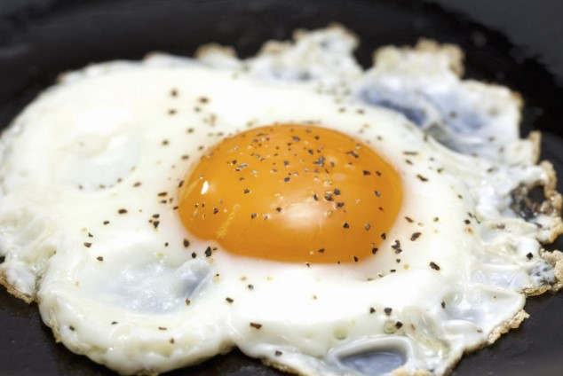

A Fried Egg

OK, so you don't think you can cook, but you want to try. Don't worry! An egg is the
easiest ingredient to cook, and they're cheap to experiment with, AND there are so many
recipes that use it!
Ingredients
- 1 egg. Don't worry about the different varieties you might see in the store. Usually it's a chicken, or duck egg. Even if it's an ostrich egg, the recipe is the same, though the cook time might be longer.
- a teaspoon of fat. It can be any cooking oil, butter, or animal fat.
- a frying pan. In a pinch, a shallow pot will do.
- a spatula
- Salt and pepper to taste.
Steps
- Heat the fat in the pan on low to medium heat.
- Once the fat is hot, you may crack the egg directly into the pan, or crack it into a ramekin or bowl, before dropping the egg gently into the hot pan.
- Step away if the egg begins to spatter! The spatter will subside.
- The egg is ready when the yolk is firm when poked, or the edges curl and turn brown.
- Turn off the heat, and wait for the egg to stop spattering. With the spatula, slip the flat edge underneath the egg, and lift it from the pan. Move it to a plate.
- Season with salt and pepper.